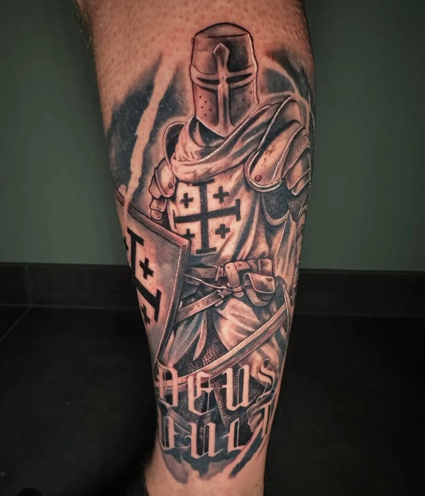
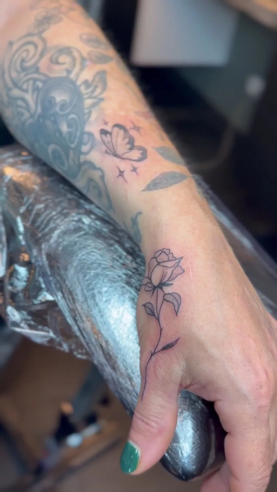

zwart & grijs
Elke sleeve begint met een gesprek.
Custom werk in zwart en grijs, arm- en beensleeves en een tweede leven voor oude tattoos. Je boekt bij Michaël met een berichtje op Instagram.
Van dichtbij bekeken.
Grote stukken die over meerdere sessies groeien, en kleinere ontwerpen die net zo veel aandacht krijgen. Een greep uit het werk van Michaël.





Zo pakken we het aan.
Je stuurt je idee
Een berichtje op Instagram is genoeg: wat je wil, waar het moet komen en hoe groot. Foto's of voorbeelden mogen erbij.
We bespreken het samen
Michaël denkt mee over het ontwerp, tot het helemaal van jou is.
"Hij luistert naar wat je wil en geeft advies waar nodig"Mireille W.
Sessie per sessie
Een sleeve zet je niet op een namiddag. Je bouwt hem op, met rust en in een propere privéstudio.
"Hij weet goed wat hij doet, werkt super hygiënisch en is een fijne persoon om bij langs te gaan."Silke C.
Een tweede leven voor een oude tattoo.
Vervaagd, uitgelopen of gewoon niet meer van deze tijd? Een oude tattoo kan je laten bijwerken of verwerken in een nieuw stuk. Stuur een foto, dan bekijkt Michaël wat mogelijk is.
15jaar oud"Last minute een afspraak kunnen scoren voor 'renovatie' van een 15 jaar oude tattoo"Cindy V. op Google
Van armsleeve naar legsleeve.
"Ik ben eind 2024 bij Martinez Tattoo binnengestapt om mijn idee voor een armsleeve te bespreken. Ondertussen zijn we al even bezig aan een legsleeve."
Steffi A. op Google
Enkel op afspraak.
Martinez Tattoo is een privéstudio. Er is geen binnenloop: je stuurt een berichtje en Michaël plant samen met jou een moment.